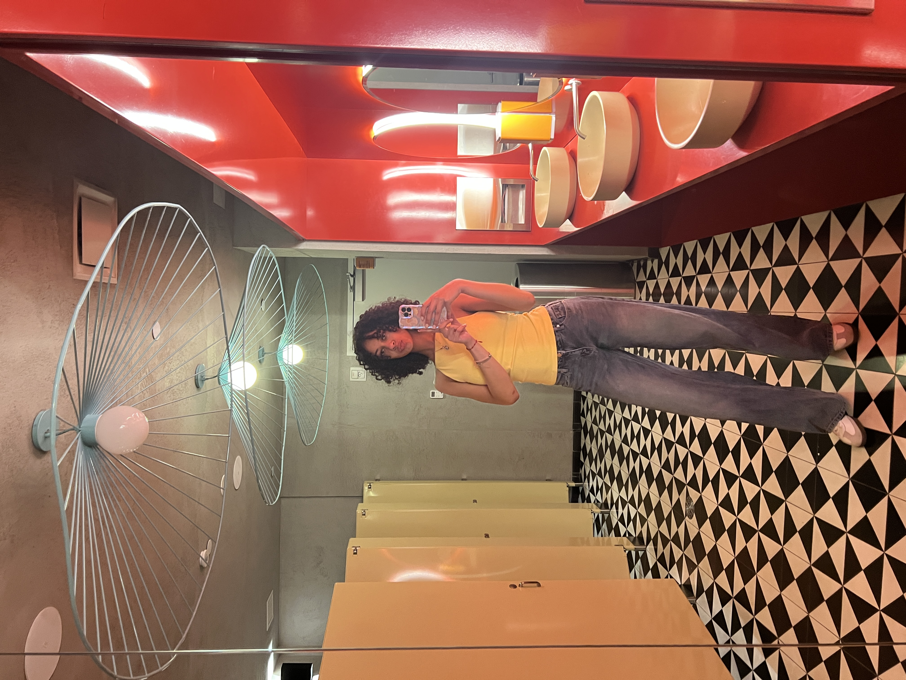

My name is Ana Duran I am a senior at Hunter, and I am looking forward to what this class has to offer. I want to be a media maker because of my career when I graduate Hunter. I want to work as a public Relations Specialist and that may require some interactive design and photoshop. I find it very cool how people make art using computers and all of these tools that I did not know you could use to make this kind of artwork. I wish to accomplish knowing how to make artwork through computers and I wish to know how to photoshop in a cooler way than just using my phone.
I have not done any artwork of my own that has to do with interactive design, but I am hoping to get a lot out of this class and gain some tools in my tool box. There is some work that moves me while walking down the streets of NYC because there is a lot of artwork in my city. The type of artwork that really moves me is the ones that leave you wondering what was the whole point of that piece of art. I hope I can use these skills I learn in this class and apply them it my career because I think it would help me a lot outside of college.
